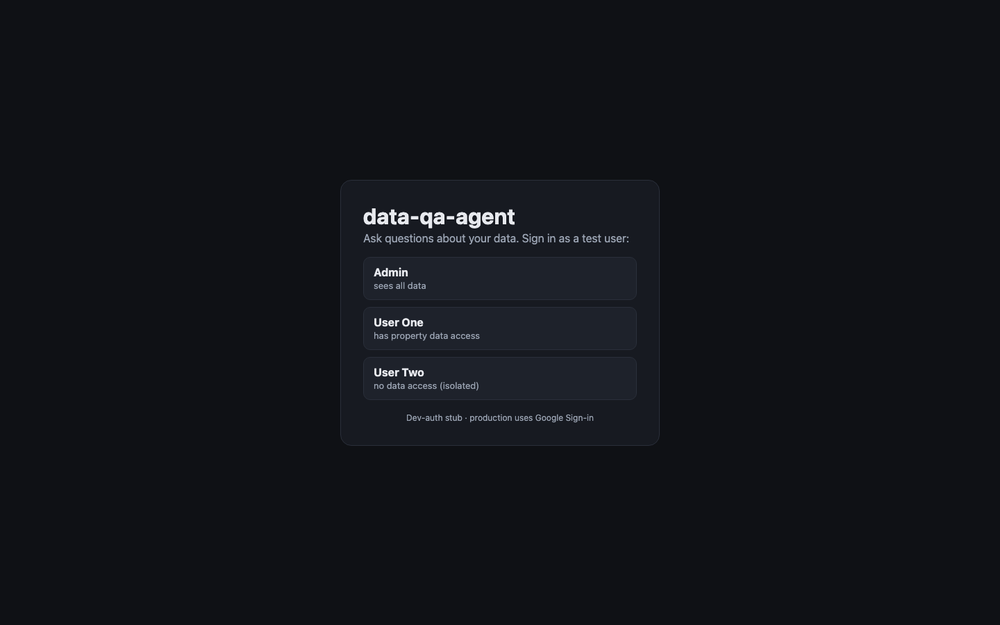
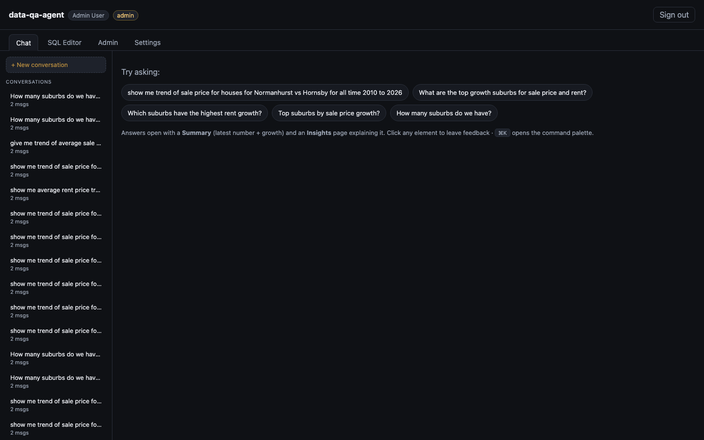
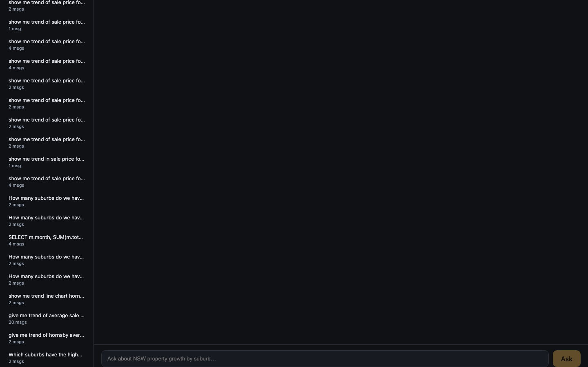
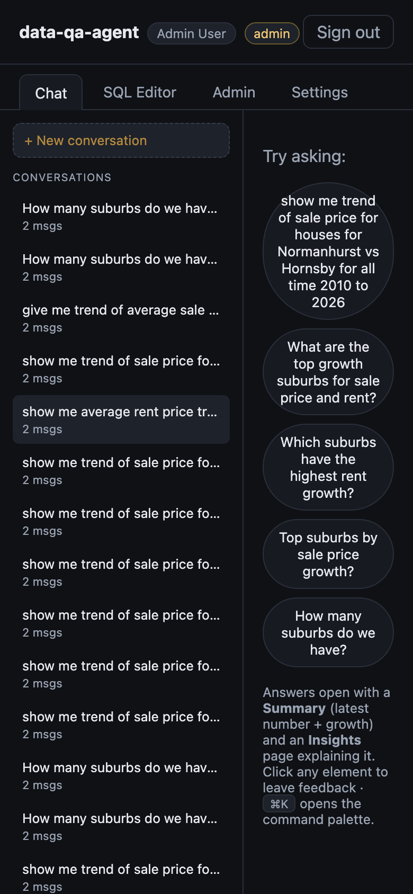
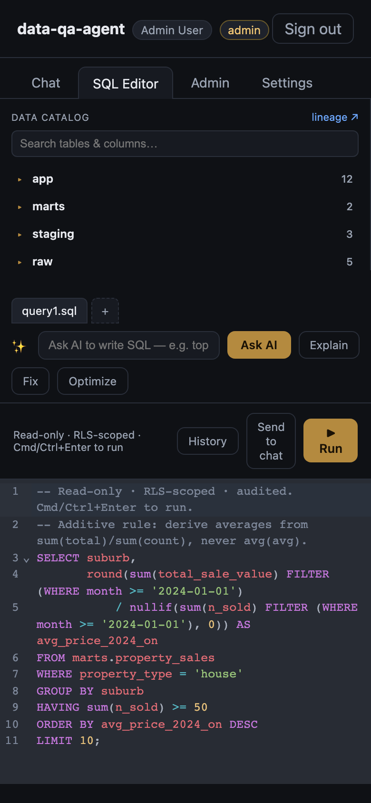
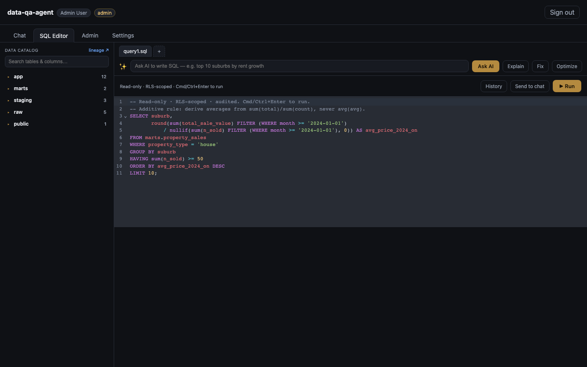
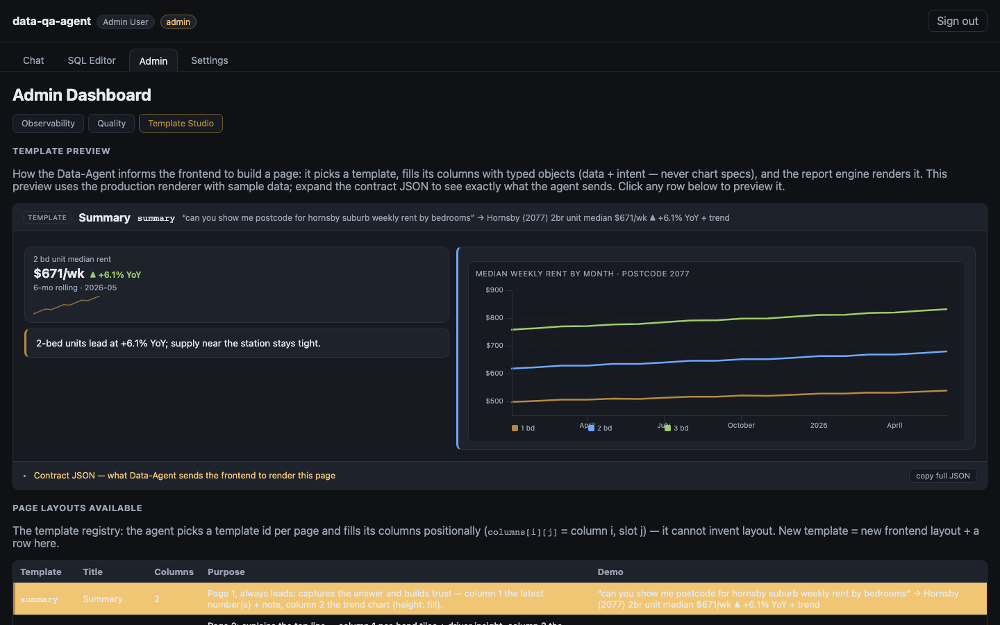
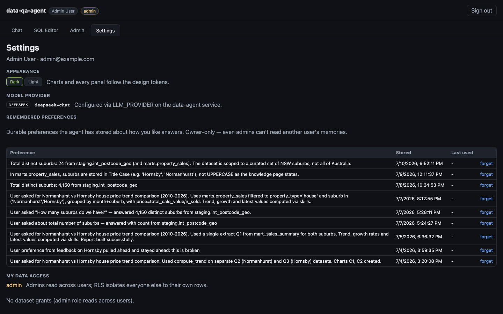

A code-and-screenshot review of the current frontend, what the best AI apps do differently, a concrete design direction with mockups, a responsive strategy for phone → ultrawide, and a 6-phase implementation plan — each phase an independently shippable PR.
What's strong: the report engine (KPI tiles + visx charts + page templates), the streaming ghost-page UX, the two-layer design-token architecture, ⌘K palette, and a11y basics (focus rings, ARIA tabs). Template Studio proves the product's output already renders beautifully.
What breaks the impression: three structural layout bugs make the app feel broken before styling even
matters — the page scrolls as one giant document so the composer and header scroll out of view, nothing
auto-follows the streaming answer, and on a phone the fixed 230px sidebar leaves ~140px for the actual chat.
On top of that: a repo slug (data-qa-agent) as the brand, system-default typography, browser-style
tabs, answers trapped in bubbles spanning ~1200px, a bare login card, and no motion.
The plan: keep the stack and the report engine; rebuild the frame in 6 shippable phases — A layout/scroll fixes · B identity + tokens v2 · C app shell (icon rail, mobile bottom nav) · D chat canvas (hero composer, open answers, reading column) · E login & first-run · F parity + responsive hardening with a Playwright viewport-regression suite.
Height-capped shell; panes scroll, composer and nav never leave the screen; stream auto-follows.
Thread capped at ~768px like ChatGPT/Claude; answers leave their bubble and render on canvas.
Perplexity-style centered ask on empty state; docks to bottom once a conversation starts.
Product mark, name treatment, favicon, Inter + JetBrains Mono, motion tokens — Linear-level craft.
3 tiers (desktop / tablet / mobile): icon rail → bottom nav, drawers, dvh + safe-area, 44px targets.
Captured from the live app at localhost:5230 (Playwright, real dev-auth login, dark theme
default) at 1440×900 and 390×844. Findings are tagged
BUG breaks usage ·
FRICTION works but fights the user ·
POLISH looks unfinished.




.chat-layout is missing
from the 720px media query — so conversations eat 59% of the screen and the thread gets ~140px. Suggestion
pills (border-radius 999px on wrapped text) become tall ovals. Composer: below the fold again.




| ID | Severity | Finding | Root cause (verified in code) |
|---|---|---|---|
| B1 | BUG | Composer, header and tabs scroll out of view. The whole app scrolls as one document; the thread pane's overflow-y never engages. |
styles.css:138 — .app has min-height:100vh but no height cap, so it grows with the sidebar instead of containing it |
| B2 | BUG | Mobile chat is unusable — fixed 230px sidebar on a 390px phone leaves ~140px for messages. | styles.css:598 — .chat-layout grid is absent from the @media (max-width:720px) block |
| B3 | BUG | Nothing follows the stream. Working steps, ghost pages and the final report render below the fold; user must scroll to find their answer. | no scrollIntoView / scrollTo anywhere in frontend/src |
| B4 | BUG | Mobile viewport basics missing — 100vh vs iOS URL bar, no safe-area insets, ~28px tap targets, inputs <16px trigger iOS zoom. | no dvh/svh/env(safe-area-inset-*) in styles.css; viewport meta lacks viewport-fit |
| B5 | BUG | Suggestion pills become tall ovals when text wraps on narrow screens. | styles.css:151 — border-radius:999px on multi-line buttons |
| F1 | FRICTION | No reading column — thread and settings span ~1200px+; industry standard is ~720–768px for answers. | main/.bubble width rules only (92% of pane) |
| F2 | FRICTION | Reports are trapped inside chat bubbles — KPI grids and charts fight the bubble border instead of rendering as first-class canvas cards. | ChatPage.tsx:273 — every assistant answer wraps in .bubble |
| F3 | FRICTION | Conversation sidebar is raw data: duplicate truncated titles, "2 msgs" meta, no date grouping, no rename/delete, no search. | ChatPage.tsx ConversationList; API already returns created_at for grouping |
| F5 | FRICTION | Browser-style tab bar + header pills — a dated pattern that has no mobile answer and no icons. | App.tsx:294 nav.tabs; styles.css:248 |
| F6 | FRICTION | Composer is a bare single-line input: no multiline, no Enter/Shift+Enter, no stop-while-streaming, no keyboard hints. | ChatPage.tsx:297 — <input> + "Ask" button |
| F7 | FRICTION | SQL editor: fixed 320px editor height with dead space below; results only appear post-run. | styles.css:285 — .sqled-editor .cm-editor { height:320px } |
| F8 | FRICTION | Empty state is "Try asking:" + five sentence-pills — no greeting, no hero moment, onboarding hint buried in one line. | ChatPage.tsx:253 |
| P1 | POLISH | No identity: repo slug as product name, no logo/mark, no favicon, no theme-color, title = "data-qa-agent". | index.html — head has only charset/viewport/title |
| P2 | POLISH | System-default typography; tabular-nums only sporadic; no type scale — sizes are ad-hoc 10–22px. | styles.css:120 body font stack |
| P3 | POLISH | No motion system — tab switches, login→app, palette, drawers all cut instantly. Only 2 keyframes exist (step-in, ghost pulse). | styles.css — no transition tokens |
| P4 | POLISH | Loading states are text ("Loading SQL editor…", "Loading…") — no skeletons outside the (good) ghost pages; blank flash before the JS bundle paints. | App.tsx Suspense fallback; index.html has no pre-paint background |
Researched against current (2026) production patterns in ChatGPT, Claude.ai, Perplexity, Linear, and the modern data tools (Hex, Omni). The target in one line: Perplexity's ask flow, in a Linear-quality shell, with ChatGPT's reading ergonomics — wrapped around the report engine you already built.
Evolution, not replacement: keep the two-layer token architecture, the dark-first gold identity, and every report-engine component. Change the values, add the missing token families (type, motion, elevation), and give the product a name treatment. The mockups below are live HTML in the proposed tokens — this is the actual direction, not an illustration.
| UI face | Inter (variable, self-hosted via @fontsource-variable/inter) |
| Code / SQL / run-ids | JetBrains Mono |
| Scale | 28 · 22 · 17 · 15 (chat) · 14.5 (UI) · 12.5 · 11 |
| Numerals | font-variant-numeric: tabular-nums on KPIs, tables, meta |
| Micro-labels | 11px / 600 / .06em tracking (existing pattern, formalized) |
| bg | #0f1115 → #0b0d12 deeper canvas |
| panel | #171a21 → #12151c more layer contrast |
| border | #2a2f3a → #232834 hairline feel |
| gold | kept — but reserved for primary actions & brand |
| blue | all interactive text/links/focus — never decorative |
| light theme | same semantic names, re-audited for AA contrast |
| --dur-1/2/3 | 120ms · 180ms · 260ms |
| --ease | cubic-bezier(.2,.8,.2,1) |
| Applies to | view fades, drawer slides, message fade-up, hover, palette |
| --elev-1/2/3 | card · popover · modal shadows (3 levels, no more ad-hoc) |
| Reduced motion | prefers-reduced-motion zeroes all durations |
| Token architecture | primitives → semantics, themed via data-theme |
| Report engine | PageLayout, templates, KPI/Trend/Bars, chart tokens |
| Streaming UX | step list + ghost pages + locked teasers (restyled only) |
| ⌘K palette | plus visible hints to teach it |
| A11y base | focus-visible rings, ARIA roles — extended, not replaced |
Ask your data anything. Governed answers in seconds.
Row-level security · every query audited
Fixes P1 F8. One card, but with: a brand mark, the product name (Datapilot — locked Q4), a one-line value proposition, the primary CTA visually first, demo profiles demoted to secondary with avatars, and a trust line that turns the security model into a feature.
Ask about NSW property — 24 suburbs · sales & rents · 2010→2026
Fixes F5 F8 B5. The tab bar and header collapse into a 56px icon rail (brand top, nav middle, theme + user bottom). The empty state becomes the product's "search moment": personalized greeting, dataset facts as the subtitle, a real multiline composer with keyboard hints, and four short suggestion cards (label + preview) replacing sentence-pills.
Rent growth is led by Hornsby (+6.1% YoY), with 2-bed units driving the move; the top five suburbs all sit on the rail corridor.
Fixes F1 F2 F6. Only the user's
message keeps a bubble. The assistant gets an identity row (mark + engine/rows/latency meta — today's
.meta, promoted), then the answer text and report pages render directly on the canvas inside a
~768px reading column. Report pages become segmented pills instead of stacked sections.
Fixes B2 B4. Below 768px: the rail disappears, a bottom tab bar (56px + safe-area) carries Chat / SQL / Settings (+ Admin for admins), conversations open as a slide-over sheet from ☰, the composer docks above the nav, and report columns stack (the media query that already exists — finally reachable because the shell no longer squeezes it).
dvh; composer and nav padded by env(safe-area-inset-bottom).The presentation problem is really a flow problem: today every transition is a hard cut into a screen that isn't ready for you. The proposed flow has a prepared moment at each step.
flowchart TD A["Visit app
(blank flash, default favicon)"] --> B["Bare card: repo slug +
3 test-user buttons"] B --> C["Instant DOM swap
no transition"] C --> D["'Try asking:' text +
5 sentence-pills
composer below the fold"] D --> E["Type in single-line input"] E --> F["Steps + ghosts append
below the fold
header scrolls away"] F --> G["Report lands off-screen —
user scrolls to find it"] style A fill:#1e222b,stroke:#6b2a2a,color:#e7e9ee style D fill:#1e222b,stroke:#6b2a2a,color:#e7e9ee style F fill:#1e222b,stroke:#6b2a2a,color:#e7e9ee style G fill:#1e222b,stroke:#6b2a2a,color:#e7e9ee style B fill:#1e222b,stroke:#6b5a2a,color:#e7e9ee style C fill:#1e222b,stroke:#6b5a2a,color:#e7e9ee style E fill:#1e222b,stroke:#6b5a2a,color:#e7e9ee
flowchart TD A["Visit app
brand favicon + pre-painted bg"] --> B["Branded login:
mark · value line · one CTA"] B --> C["Shell skeleton fades in 180ms
(rail + panels, content-shaped)"] C --> D["Hero: greeting + dataset facts
big composer + 4 suggestion cards"] D --> E["Ask → composer docks to bottom"] E --> F["Auto-follow stream:
steps + ghost pages stay in view
stop button available"] F --> G["Answer canvas: pages + toolbar
+ follow-up chips"] G -->|"follow-up"| E style A fill:#1e222b,stroke:#33502f,color:#e7e9ee style B fill:#1e222b,stroke:#33502f,color:#e7e9ee style C fill:#1e222b,stroke:#33502f,color:#e7e9ee style D fill:#1e222b,stroke:#33502f,color:#e7e9ee style E fill:#1e222b,stroke:#33502f,color:#e7e9ee style F fill:#1e222b,stroke:#33502f,color:#e7e9ee style G fill:#1e222b,stroke:#b48a3f,color:#e7e9ee
Replace the single 720px patch-query with three deliberate tiers. The same shell component renders all three; only the nav chrome and panel behavior change.
| Mechanic | Today | Target |
|---|---|---|
| Height chain | .app min-height:100vh → page scrolls as one document (B1) | html,body,#root{height:100%} · shell height:100dvh; overflow:hidden · thread/panels each scroll themselves |
| Stream follow | none (B3) | Auto-scroll while pinned to bottom; "↓ jump to latest" pill when user scrolls up ≥120px; smooth-scroll on answer land |
| Safe areas | none (B4) | viewport-fit=cover + env(safe-area-inset-*) on composer & bottom nav |
| Touch targets | ~28px buttons/chips | ≥44px interactive height on <768px (padding scale bump) |
| Tables | nowrap cells, plain overflow-x | Wrapper scroll + sticky first column + right-aligned tabular numerals |
| Charts | ✅ already ParentSize-responsive | Keep; add mobile height cap + fewer x-ticks under 480px |
| Breakpoint tokens | one hardcoded 720px query | --bp-md:768px; --bp-lg:1024px documented; queries reference the tiers |
| Reduced motion | n/a (no motion) | All new motion behind prefers-reduced-motion |
Ordered so value lands early: A is pure fixes (could merge tomorrow), B–E each transform one surface,
F locks it in with regression tests. Every phase = one PR through the normal gate (make smoke, service
tests, Playwright e2e). Estimates assume one developer with AI assistance.
html,body,#root {height:100%}; .app{height:100dvh; overflow:hidden} (drop min-height) — header/tabs/composer become permanently visible; fixes B1.chat-layout{grid-template-columns:1fr} + hide/overlay .conv-panel in the ≤768px query; fixes B2useStickToBottom hook on the thread: follow stream while pinned; "jump to latest" pill; fixes B3viewport-fit=cover + safe-area padding on composer; inputs to 16px on mobile; fixes B4border-radius:14px + left-aligned wrap; fixes B5@fontsource-variable/inter + @fontsource/jetbrains-mono; wire --sans/--mono tokens; type scale + tabular-nums utilities P2favicon.svg + apple-touch-icon, <title>, theme-color, OG description, pre-painted background in index.html (kills the white flash) P1 P4styles.css (671 lines) → styles/tokens.css · base.css · shell.css · chat.css · report.css · sql.css · admin.css via CSS imports (Vite bundles them; zero runtime change)<title>, OG metagetTheme() in lib/theme.ts falls back to prefers-color-scheme instead of darkNavRail (56px: brand · Chat/SQL/Admin/Settings icons+tooltips · theme toggle · user menu w/ sign-out) replaces header+tabs on ≥768px F5BottomNav + sheet primitives for <768px; conversations & SQL catalog become drawers thererole="tab"-compatible or specs move to getByRole("link"))Composer: auto-grow textarea (max 6 lines), Enter/Shift+Enter, send icon button, stop button while streaming (abort the SSE fetch), hint row F6toHaveScreenshot baselines — the suite that would have caught B1–B5getByRole("tab") and text
clicks; Phase C changes nav semantics. Mitigation: update helpers in the same PR; smoke + chat/studio specs are
the contract.!important mobile override. Keep that contract in Phase A/C; revisit only if a template needs a
tablet-specific layout.size-adjust fallback metrics to avoid CLS; ~60KB gz added — acceptable.Locked from your review on 2026-07-11. The plan, mockups and phases reflect these — the build can start with Phase A. (Annotations on any section remain welcome.)